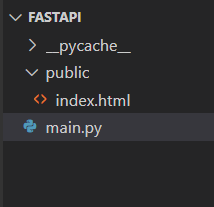
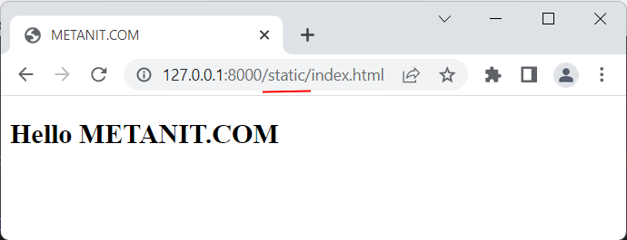
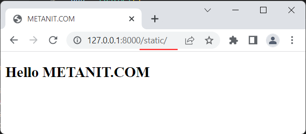

Для определения интерфейса для работы с сервером нередко используются html-страницы, то есть cтатические файлы с кодом html, которые могут использовать какие-то другие статические файлы -
файлы стилей css, изображений, скриптов javascript и т.д. Для работы со статическими файлами FastAPI предоставляет удобный и компактный функционал, который располагается в пакете
fastapi.staticfiles. В частности, для обслуживания статических файлов в определенном каталоге применяется класс StaticFiles, конструктор которого имеет следующую сигнатуру:
StaticFiles(directory=None, packages=None, html=False, check_dir=True)
Используемые параметры:
directory: путь к каталогу со статическими файлами
packages: список пакетов python в виде списка строк или кортежей строк
html: устанавливает запуск в HTML-режиме, когда при обращении к корню каталога автоматически загружается файл index.html (при наличии такого файла)
check_dir: гарантирует, что каталог со статическими файлами существует
Рассмотрим небольшой пример. Пусть у нас будет следующий проект:

В проекте определен каталог public, который предназначен для хранения статических файлов. И определеим в этом каталоге простейнький файл index.html со следующим кодом:
<!DOCTYPE html>
<html>
<head>
<title>METANIT.COM</title>
<meta charset="utf-8" />
</head>
<body>
<h2>Hello METANIT.COM</h2>
</body>
</html>
В файле main.py для обслуживания статических файлов из каталога public определим следующий код:
from fastapi import FastAPI
from fastapi.staticfiles import StaticFiles
app = FastAPI()
app.mount("/static", StaticFiles(directory="public"))
Для работы со статическими файлами вначале импортируем класс StaticFiles. Затем создаем объект приложения FastAPI и вызываем у него метод mount().
Метод mount() устанавливает объект ASGIApp0 - обработчик запросов по определенному пути. В данном случае для запросов по пути "/static" в качестве обработчка запросов выступает
объект StaticFiles, в котором с помощью параметра directory в качестве каталога статических файлов устанавливается каталог "/public" (название каталога произвольное).
То есть при обращении по пути "/static" приложение будет посылать в ответ файлы из каталога "public".
Запустим приложение и обратимся по пути http://127.0.0.1:8000/static/index.html, и приложение в ответ пришлет нам файл index.html:

Подобным образом мы можем добавлять в каталог public и другие статические файлы.
В примере выше для обращения к файлу index.html Нередко веб-приложение имеет некоторую главную страницу. Например, когда мы обращаемся к корню некоторых сайтов или к корню их отдельных каталогов, веб-сервер присылает главную страницу этого
сайта или каталога. Класс StaticFiles также позволяет сделать подобное с помощью передачи параметру html значения True (значение по умолчанию -
False). В этом случае, если в пути не указывается имя файла, то сервер автоматически отправляет файл index.html (при его наличии). Например, изменим код main.py следующим образом:
from fastapi import FastAPI
from fastapi.staticfiles import StaticFiles
app = FastAPI()
app.mount("/static", StaticFiles(directory="public", html=True))
Теперь мы можем обратиться по пути http://127.0.0.1:8000/static/, и сервер также пришлет нам страницу index.html:

Подобным образом можно установить главную страницу и для всего веб-приложения:
from fastapi import FastAPI
from fastapi.staticfiles import StaticFiles
app = FastAPI()
app.mount("/", StaticFiles(directory="public", html=True))